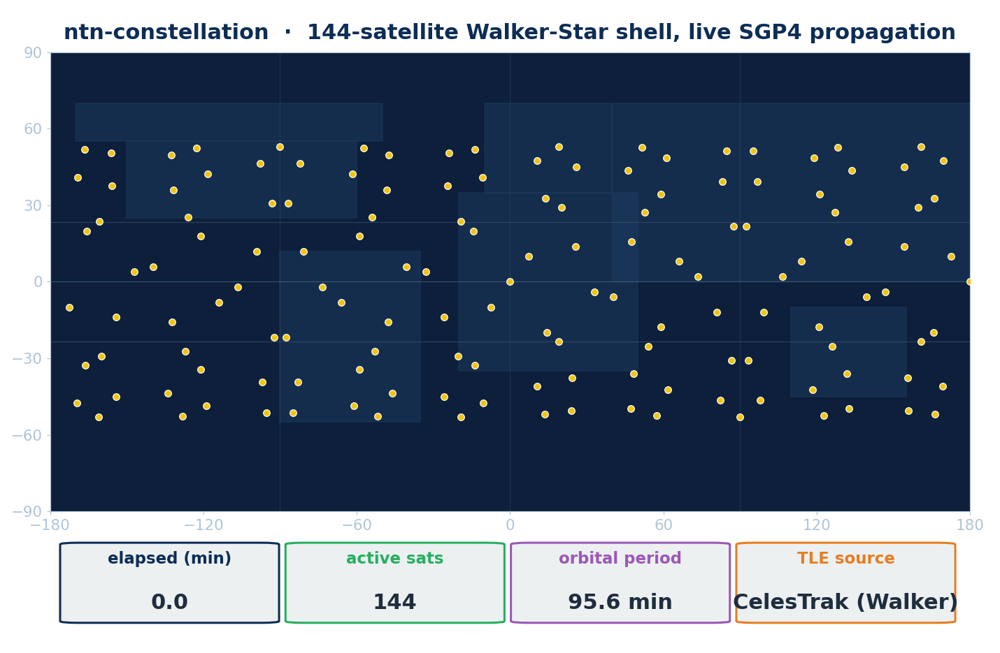

title: ntn-constellation - LEO Walker generation, orbital propagation & contact-graph routing description: ns-3 module for non-terrestrial networks: Walker-Delta/Star LEO constellations, SGP4/J2 orbital propagation, ISL contact-graph routing, and live TLE feeds.
ntn-constellation¶
Gallery¶


ntn-constellation is the ns3-ntn-toolkit module that supplies the orbital-mechanics foundation: it generates LEO Walker constellations, propagates them inside an ns-3 simulation, and turns the time-varying geometry into the link-up/link-down contact events the rest of the data plane consumes. It pairs an in-simulation C++ propagator with a pip-installable Python companion that uses the canonical SGP4/SDP4 libraries and live TLE feeds.
Why it matters. Every NTN study starts with where the satellites are: realistic LEO geometry, visibility windows, and inter-satellite link topology drive handover, routing, and link-budget behavior. Researchers need orbits that move during Simulator::Run() (not static placeholders) and a way to fold real CelesTrak / Space-Track ephemerides into ns-3 and CesiumJS. This module provides both, and validates its predictions against a 3GPP TR 38.821 calibration corpus.
What it simulates¶
- Walker-Delta / Walker-Star generation (
WalkerConstellation::BuildDelta()/BuildStar()): builds a full constellation from aWalkerConfig(planes, satellites per plane, altitude, inclination, eccentricity, argument of perigee, epoch), emitting classical orbital elements ready for the mobility model. - In-simulation orbital propagation (
Sgp4MobilityModel): an ns-3MobilityModelthat propagates a satellite from aTleRecordorKeplerianElementswith an analytic Kepler propagator plus secular J2 corrections (RAAN and argument of perigee) and a TLE-compatible interface, so position queries follow the orbit during the run. Provides ECEF / ECI / geodetic surfaces and a ground-station elevation query. (The in-sim C++ model is Kepler + J2; canonical full SGP4/SDP4 lives in the Python companion.) - Contact-graph scheduling (
ContactGraphScheduler): evaluates ground-to-satellite (GSL) and satellite-to-satellite (ISL) visibility across the timeline and raisesContactEvents as links come up and go down, with configurable minimum elevation, maximum ISL range, and gate hysteresis. - Contact-graph routing (
ContactGraphRouter): forwarding over the time-varying topology via direct contacts, BFS shortest path, and edge-weighted Dijkstra, with a regenerative-vs-bent-pipe mode (SetRegenMode) that routes around bent-pipe transit nodes (TR 38.821 §4.2 payload modes). - TR 38.821 + Starlink calibration corpus (
Tr38821CorpusReader,CalibrationHarness): ships 3GPP TR 38.821 reference scenarios and link budgets plus a Starlink-EU latency/station corpus, and compares toolkit predictions against published references with pass/fail gates (≤1 dB pathloss/atmospheric/CNR, ≤5 ms RTT p50). - Python tool-side companion (
ntn_constellation,ntn-fetchCLI): canonical SGP4/SDP4 via thesgp4library and Skyfield;walker_delta/walker_stargenerators; ISL topology builders; CelesTrak (no credentials) and Space-Track live feeds with a TTL TLE cache; and SNS3 scenario + CesiumJS CZML exporters.
Standards & references¶
- 3GPP TR 38.821: NTN reference scenarios, link budgets, and transparent / regenerative payload architecture (§4.2); calibration target for the corpus.
- 3GPP TR 38.811: NTN UE mobility classes used for ground UE placement in the access-link examples.
- CelesTrak and Space-Track: live TLE ephemeris sources consumed by the Python companion.
Use cases¶
- Constellation design exploration: sweep planes, satellites per plane, altitude, and inclination for Starlink-, OneWeb-, Kuiper-, or Iridium-class shells and measure the resulting coverage and ISL topology.
- Time-varying ISL routing research: study BFS, Dijkstra, and regenerative routing over a contact graph as the topology evolves during a simulation.
- Link-budget calibration: validate pathloss, atmospheric loss, C/N0, and RTT predictions against the TR 38.821 and Starlink-EU corpus before publishing results.
- Live digital-rehearsal scenarios: fetch today's real TLEs and export SNS3 scenarios plus CesiumJS CZML for visualization of an actual constellation.
- Realistic access-link evaluation: drive a real mmwave NR NTN cell from a propagating LEO satellite with measured SINR, TBLER, and throughput off the PHY trace.
Run it¶
./ns3 run "ntn-constellation-walker-traffic --simSeconds=20 --numPlanes=6 --satsPerPlane=11 --altKm=780 --inclinationDeg=53 --czml"
This builds a Walker-Delta LEO shell, attaches a real mmwave NR NTN cell to the serving satellite, runs UDP traffic with SINR/TBLER/throughput measured off the PHY traces, and emits a CesiumJS CZML track. The TLE-driven ntn-constellation-sgp4-mobility-traffic and the ISL-routed ntn-constellation-isl-routed-traffic examples cover single-satellite passes and inter-satellite forwarding respectively.
Scope¶
Pure-Python tool-side companion that bridges live ephemerides (CelesTrak / Space-Track) into ns-3 SNS3 scenarios and CesiumJS visualisations. It does not modify the C++ ns-3 build; it produces inputs the existing simulator already consumes.
| Metric | Value |
|---|---|
| Built-in presets | Starlink (shells 1+2 + polar) · OneWeb · Kuiper · Telesat Lightspeed · Iridium NEXT |
| Walker generators | walker_delta · walker_star (emit valid SGP4-parseable TLEs) |
| Propagator backends | sgp4 (Brandon Rhodes / Vallado) + skyfield cross-check |
| ISL topology builders | k-NN with range cap · closed-form Walker +grid |
| Live feeds | CelesTrak (no credentials) · Space-Track (SPACETRACK_USER / SPACETRACK_PASS) |
| TLE cache | TTL-based, default 6 h, on-disk |
| 24 h propagation, 66 sats, 1440 samples | 0 NaN, 0.4 s wallclock |
| SGP4 vs Skyfield (1800 s pass, STARLINK-1008) | max 23.5 µs error, drift 0.006 µs/s |
| GAT next-hop accuracy (60 sats, real Walker-Star) | 90 % |
Quickstart¶
pip install -e contrib/ntn-constellation
# Live: today's Starlink → SNS3 + Cesium
ntn-fetch starlink --out data/starlink-now \
--max-sats 200 --czml --czml-duration-min 120 -v
# Walker preset: 1156-sat Kuiper, fully offline
ntn-fetch --preset kuiper --out data/kuiper-walker \
--isl-walker --czml
What ships¶
contrib/ntn-constellation/
├── ntn_constellation/
│ ├── feeds/ # CelesTrak + Space-Track adapters
│ ├── presets.py # named constellations + Walker generators
│ ├── propagator.py # SGP4/SDP4 wrapper
│ ├── isl.py # k-NN + Walker +grid topology builders
│ ├── ns3_export.py # SNS3 scenario directory writer
│ ├── czml.py # CesiumJS CZML emitter
│ └── cli.py # ntn-fetch entry point
├── tests/ # 10 pytest functions
└── pyproject.toml
Validation gates¶
- 10/10 unit tests green (
pytest -v) - Live demo: 10 299 Starlink TLEs fetched, 50-sat sample propagated, 118 ISL edges, SNS3 + 1.3 MB CZML emitted
- Walker preset: 1156-sat Kuiper with 2278 +grid ISLs offline-generated
- CLI smoke:
ntn-fetch iridium-next --out … --isl-walker --czmlexits 0
Source¶
Cite¶
If you use this module, please cite the toolkit (see Cite).